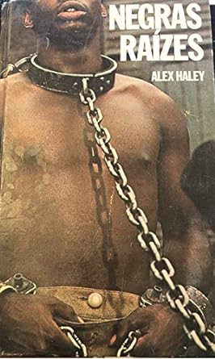
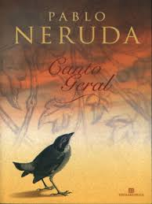

O que foi a Diáspora Africana
A diáspora africana refere-se à dispersão global da população de ascendência africana, principalmente devido ao tráfico transatlântico de escravizados durante os séculos XVI ao XIX. Este fenômeno influenciou profundamente as culturas e sociedades ao redor do mundo, contribuindo para a formação de identidades afrodescendentes em diversas regiões. A diáspora africana também é marcada pela resistência, preservação de tradições culturais e contribuições significativas para as artes, música, religião e política em vários contextos. As experiências compartilhadas pelos descendentes da diáspora africana continuam a desempenhar um papel crucial na compreensão da história global e das lutas por igualdade e justiça.
Consequências no Brasil
A diáspora africana teve profundas consequências no Brasil, principalmente devido à longa história de escravidão. A presença africana deixou marcas significativas na cultura brasileira, refletidas na religião, música, dança e culinária. As comunidades afro-brasileiras contribuíram de maneira crucial para a rica diversidade cultural do país. No entanto, as sequelas da escravidão persistem nas desigualdades sociais e econômicas, com a população afrodescendente enfrentando ainda desafios como discriminação racial e acesso desigual a oportunidades. A luta contínua por igualdade e reconhecimento das contribuições afro-brasileiras destaca a importância contínua da diáspora africana na narrativa do Brasil.
Consequências na África
A diáspora africana teve impactos significativos na África, resultando na perda de populações e recursos humanos devido ao tráfico de escravizados. Além disso, a escravidão deixou cicatrizes profundas nas comunidades africanas, afetando estruturas sociais e econômicas. A descontinuidade causada pela diáspora africana também influenciou as dinâmicas políticas e culturais no continente. Apesar dos desafios históricos, a diáspora africana também deu origem a conexões transnacionais e uma diáspora global que continua a desempenhar um papel na interação entre África e suas comunidades dispersas.
Revoltas relacionadas à Diáspora Africana para as Américas
A diáspora africana refere-se à dispersão global da população de ascendência africana, principalmente devido ao tráfico transatlântico de escravizados durante os séculos XVI ao XIX. Este fenômeno influenciou profundamente as culturas e sociedades ao redor do mundo, contribuindo para a formação de identidades afrodescendentes em diversas regiões. A diáspora africana também é marcada pela resistência, preservação de tradições culturais e contribuições significativas para as artes, música, religião e política em vários contextos. As experiências compartilhadas pelos descendentes da diáspora africana continuam a desempenhar um papel crucial na compreensão da história global e das lutas por igualdade e justiça.
Religiosidade em relação à Diáspora Africana
A religiosidade na diáspora africana é marcada pela preservação das tradições culturais em meio à dispersão global da população africana. Nas Américas, surgiram religiões sincréticas, como Candomblé e Santería, que mesclam elementos das crenças africanas com práticas locais. Essas religiões celebram a espiritualidade, incorporando rituais, música e dança. A resistência e resiliência das comunidades afrodescendentes são evidenciadas na manutenção dessas práticas ao longo das gerações. A religiosidade na diáspora africana também desempenha um papel crucial na expressão cultural e na preservação da identidade afrodescendente.
Livros significativos:
Tenda dos Milagres
Jorge Amado, um dos mais renomados autores brasileiros, apresenta em "Tenda dos Milagres" a cultura afro-brasileira e o candomblé de forma envolvente. Esta obra é um mergulho nas tradições, na religiosidade e nas complexidades da identidade negra no Brasil.
Memórias de um Sargento de Milícias
Este romance do século XIX revela aspectos da vida cotidiana no Brasil da época e, implicitamente, a presença africana na formação da nação. Através das páginas deste livro, observamos traços da herança africana nas tradições culturais, na religiosidade e nas relações sociais.
Quarto de Despejo
Carolina Maria de Jesus, uma catadora de papel, narra sua vida nas favelas de São Paulo.
Em suas palavras, descobrimos a luta, a resiliência e a voz da população negra e pobre, cujas histórias muitas vezes foram negligenciadas. O livro é um poderoso testemunho da vida sob a sombra da Diáspora Africana.
Negras Raízes

"Raízes" de Alex Haley é uma narrativa épica que segue a jornada de Kunta Kinte, um africano capturado e escravizado nos EUA no século XVIII. A história abrange gerações, explorando a brutalidade da escravidão, a resiliência e a preservação da identidade cultural. Ao entrelaçar eventos históricos reais com a ficção, a obra oferece uma visão comovente da diáspora africana e suas complexidades. A adaptação televisiva ampliou seu impacto, solidificando o legado duradouro deste relato pessoal e histórico.
Canto Geral

Embora o autor seja chileno, seu "Canto Geral" inclui o notável "Canto Negreiro", que celebra a resistência e a herança africana na América Latina. O poema é uma homenagem à contribuição africana para a formação do continente.